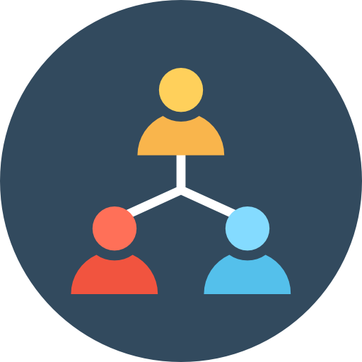

The highly productive Julia web framework
Genie is a full-stack MVC web framework that promotes a streamlined and efficient workflow for developing modern web applications.

Getting Started with Genie
1. Get Genie
julia> Pkg.clone("https://github.com/essenciary/Flax.jl") # Genie's templating engine
julia> Pkg.clone("https://github.com/essenciary/SearchLight.jl") # Genie's ORM
julia> Pkg.clone("https://github.com/essenciary/Genie.jl") # Finally the Genie itself 👻
2. Greate a new app
julia> using Genie # Bring Genie into scope
julia> Genie.REPL.new_app("demo_app") # Genie will create a new app called "demo_app"
info: Done! New app created at /demo_app
3. Start server
$> cd demo_app
$> ./genie.jl s
Listening on 0.0.0.0:8000...
Ready!
Visit http://localhost:8000 in your favorite browser
.
Your Genie app is ready!


What next?


Contribute
Fork Genie on GitHub and add your favorite new features or squash some bugs.
Visit GitHub page